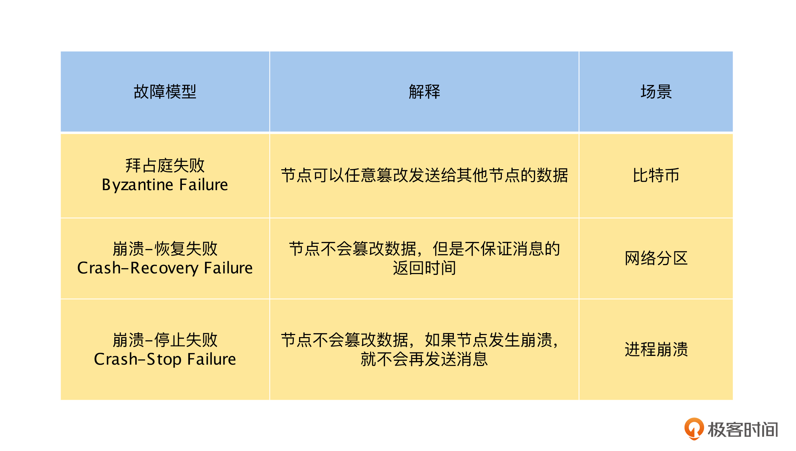

- 00 开篇词 掌握好学习路径，分布式系统原来如此简单.md
- 01 导读：以前因后果为脉络，串起网状知识体系.md
- 02 新的挑战：分布式系统是银弹吗？我看未必！.md
- 03 CAP 理论：分布式场景下我们真的只能三选二吗？.md
- 04 注册发现： AP 系统和 CP 系统哪个更合适？.md
- 05 负载均衡：从状态的角度重新思考负载均衡.md
- 06 配置中心：如何确保配置的强一致性呢？.md
- 07 分布式锁：所有的分布式锁都是错误的？.md
- 08 重试幂等：让程序 Exactly-once 很难吗？.md
- 09 雪崩（一）：熔断，让故障自适应地恢复.md
- 10 雪崩（二）：限流，抛弃超过设计容量的请求.md
- 11 雪崩（三）：降级，无奈的丢车保帅之举.md
- 12 雪崩（四）：扩容，没有用钱解决不了的问题.md
- 13 可观测性（一）：如何监控一个复杂的分布式系统？.md
- 14 可观测性（二）：如何设计一个高效的告警系统？.md
- 15 故障（一）：预案管理竟然能让被动故障自动恢复？.md
- 16 故障（二）：变更管理，解决主动故障的高效思维方式.md
- 17 分片（一）：如何选择最适合的水平分片方式？.md
- 18 分片（二）：垂直分片和混合分片的 trade-off.md
- 19 复制（一）：主从复制从副本的数据可以读吗？.md
- 20 复制（二）：多主复制的多主副本同时修改了怎么办？.md
- 21 复制（三）：最早的数据复制方式竟然是无主复制？.md
- 22 事务（一）：一致性，事务的集大成者.md
- 23 事务（二）：原子性，对应用层提供的完美抽象.md
- 24 事务（三）：隔离性，正确与性能之间权衡的艺术.md
- 25 事务（四）：持久性，吃一碗粉就付一碗粉的钱.md
- 26 一致性与共识（一）：数据一致性都有哪些级别？.md
- 27 一致性与共识（二）：它们是鸡生蛋还是蛋生鸡？.md
- 28 一致性与共识（三）：共识与事务之间道不明的关系.md
- 29 分布式计算技术的发展史：从单进程服务到 Service Mesh.md
- 30 分布式存储技术的发展史：从 ACID 到 NewSQL.md
- 春节加餐 技术债如房贷，是否借贷怎样取舍？.md
- 春节加餐 深入聊一聊计算机系统的时间.md
- 春节加餐 系统性思维，高效学习和工作的利器.md
- 结束语 在分布式技术的大潮流中自由冲浪吧！.md
27 一致性与共识（二）：它们是鸡生蛋还是蛋生鸡？
你好，我是陈现麟。
通过上节课的学习，我们了解了一致性模型的发展历史，同时还掌握了各个一致性模型之间的强弱差异，这样在极客时间后端技术的选型和演进过程中，你就能够做出最适合业务场景的选择了，这对于我们搭建分布式系统是非常关键的一个权衡。
其实一致性和共识是两个如影随形的概念，我们在讨论一致性的时候，总是会提到共识，同时我们在研究共识的时候，一致性也是不能绕过的话题。那么，你一定会很好奇它们之间的关系是什么？一致性和共识是像鸡生蛋和蛋生鸡这种非常紧密的关系呢？还是其他的比较弱的关系呢？
在这节课中，我们主要来讨论一致性与共识之间的关系，一方面解开你的疑问，另一方面通过探讨它们之间的关系，让你能够进一步理解一致性和共识。我们先一起来了解共识问题的场景与定义，然后分析达成共识所面临的挑战，最后再来探讨一致性和共识的关系。
共识问题的定义
在分布式系统中，共识（Consensus）问题是最重要，也是最基本的问题之一，简单来说它就是多个节点（进程）对某一个事情达成一致的结果。在分布式系统中，我们经常碰到这样的场景，比如在主从复制的模型中，需要在多个节点选举出 Leader 节点。由于有且只能有一个 Leader 节点，所以多个节点必须就哪一个节点是 Leader 这个决定达成一致。那么共识算法经常用于像选举 Leader 、分布式锁服务这样，有且只有一个能胜出的场景。
在讨论共识问题的时候，我们通常会做这样的形式化定义：一个或多个节点可以提议（Propose）某些值，而共识算法决定（Decide）采用其中某一个节点提议的某个值。比如在 Leader 选举的例子中，每一个节点都可以提议自己为 Leader 节点，而共识算法会让所有的节点对某一个节点为 Leader 达成一致。
所以，通过上面的讨论，我们可以得出共识算法必须满足的四个条件，具体如下。
- 一致同意（Uniform Agreement）：所有协议的节点必须接受相同的决议。
- 诚实性（Integrity）：所有节点不能反悔，即对一项提议，一个节点不能做两次决定。
- 合法性（Validity）：如果决定了值 v ，则 v 一定是由某个节点所提议的。
- 可终止性（Termination）：如果节点不崩溃，则一定可以达成决议。
其中，一致同意和诚实性定义了共识的核心思想：所有人都决定了相同的结果，并且一旦决定了，就不能再改变。
合法性主要是为了排除没有意义的解决方案。例如无论节点提议了什么值，都可以让所有节点始终以某一个固定值（如nil）达成共识的算法，这个算法满足一致同意和诚实性，但是由于达成共识的值是固定的，不是由某一个节点提出的，所以不满足合法性。
可终止性确保了，共识算法在部分节点故障的情况下，其他的节点也能达成一致，可终止性让共识算法能够容错。如果共识算法不需要容错是很容易实现的，比如将某一个节点指定为共识算法的“独裁者”，其他的节点必须同意该节点做出的所有决定。不过这个算法的问题是如果“独裁者”节点出现故障，系统就将无法达成共识了。
其实 2PC 协议就是不满足可终止性的共识协议。在 2PC 中，协调者节点就是“独裁者”节点，它在第一阶段通过收集参与者节点 Prepare 的响应做出决定，但是当协调者故障时，参与者就无法决定提交还是中止了。
到这里，你是否觉得共识问题非常简单呢？其实不然，共识问题是一个非常难的问题，如果处理不好共识，很有可能会出现各种问题或故障，比如在分布式锁服务 Leader 选举的场景中，如果出现两个 Leader，那么整个分布式锁服务就进入了脑裂的状态，锁的互斥性将会被破坏，使业务上出现不可预期的情况。
达成共识的挑战
我们已经知道共识处理不好，可能会出现各种问题或故障，那么接下来，我们就从共识理论出发，分析达成共识面临的挑战，提前发现问题，解决问题。
第一个挑战是，在异步网络模型中，如果一个节点出现崩溃，那么共识就将无法达成，这就是大名鼎鼎的 “ FLP 不可能”。但是在分布式系统中，节点的故障是我们必须要面对的问题，如果以 Leader 选举的场景来讨论，需要达成共识的一个主要场景就是， Leader 节点崩溃了，需要重新选择一个新的 Leader ，选择新的 Leader 需要达成共识，但是因为 “ FLP 不可能”，所以共识不能在节点崩溃的时候达成。
这样看来问题就无解了，但是在实际应用中，我们是可以通过 Raft 或者 Paxos 之类的共识算法来解决这一类问题的，这是否和 “FLP 不可能” 冲突了呢？
其实出现这个问题的根本原因是，在异步网络模型的定义中，网络中消息的传递延迟和节点的处理延迟是无上限的，所以对于消息是不能使用任何时钟或超时的，这样就导致在节点出现崩溃的时候，我们无法判断是否有节点崩溃，只能无限等待下去，使共识算法不能满足“可终止性”；但是在真实的环境中，我们可以允许共识算法使用超时或其他方法，来识别可疑的崩溃节点（即使有时怀疑是错误的），这样就避免了无限等待，使达成共识成为一个可行的事情。
第二个挑战与我们对分布式系统的故障模型定义有关。一般来说，在分布式系统中，我们对故障模型的定义是“崩溃-恢复失败”（Crash-Recovery Failure）模型。简单来说就是，在一个节点很长时间没有返回消息时，我们不能确定它是因为崩溃，还是因为网络或者计算速度过慢等原因导致的。其中网络或者计算速度过慢等原因，都是可以恢复的，这个模型和我们现在的分布式模型是最匹配的。
而像 Raft 和 Paxos 之类的共识算法，我们可以在“崩溃-恢复失败”（Crash-Recovery Failure）模型上，通过超时来识别可疑的崩溃节点，这就解决了一个问题：一个或多个节点可以提议（Propose）某些值，而共识算法决定（Decide）采用其中某一个节点提议的某个值。
除此之外，还有“拜占庭失败”（Byzantine Failure）和“崩溃-停止失败”（Crash-Stop Failure）等模型。其中，“拜占庭失败”（Byzantine Failure）模型在“崩溃-恢复失败”（Crash-Recovery Failure）模型上，增加了节点会主动伪造和发布虚假消息的情况，由于这个情况在内网的分布式环境中几乎不会出现，并且要解决它的代价非常高，所以一般的共识算法，不会考虑解决“拜占庭失败”（Byzantine Failure） 模型下的共识问题。
但是，在公网的分布式环境中，是需要解决这个问题的，例如比特币是通过“工作量证明”这样的算法，利用经济学原理，让节点造假的成本高于收益，来避免节点发布虚假消息的。
而“崩溃-停止失败” （Crash-Stop Failure）模型在“崩溃-恢复失败”（Crash-Recovery Failure）模型上，去掉了节点崩溃后的不确定性，如果一个节点很长时间没有返回消息，那么它就是崩溃了，不会再回复什么消息，即崩溃后就立即停止。
但是，在实际的分布式场景中，由于网络或者计算太慢而故障的节点，待恢复后，很久之前响应的消息是会正常出现的。所以，如果共识算法只能处理“崩溃-停止失败”（Crash-Stop Failure）模型，就不能适应我们实际的网络环境了。接下来，我们总结一下课程中提到的三种故障模型，如下表所示。

最后，还要特别强调一点，我们应该尽量选择像 ZooKeeper 和 etcd 这样，开源并且经过了广泛应用而被验证的程序，来为我们的应用提供共识能力，而不是自己再依据 Raft 或 Paxos 算法实现一个共识算法。因为相对于实现一个共识算法，证明共识算法实现的正确性是一个更难的问题。
一致性和共识的关系
通过学习共识问题的定义和挑战，我们对共识问题有了一定的了解，接下来，我们将一致性和共识结合，讨论一下它们之间的关系，这里的一致性我们定义为一致性最强的线性一致性。
在本专栏第 19 讲“主从复制”的课程中，我们讨论过主从复制：主节点承接所有的写入操作，然后以相同的顺序将它们应用到从节点，从而使主、从副本节点的数据保持最终一致性。
如果在主节点或同步副本的从节点上读取数据，那么就是线性一致性的。当然如果数据库的读为快照读，由于不能读到最新版本的数据，这个情况下就不是线性一致性的。
到这里，你是否觉得线性一致性非常容易实现，而且和共识算法也没有什么关系呢？其实不然，在主从复制的模型中，如果主节点不出现故障，那么一切都非常美好，但是如果主节点发生崩溃了，应该怎么办呢？
首先，最简单的办法是等待主节点修复，如果主节点无法快速修复或者无法修复，那么系统的高可用就名存实亡了。对于等待主节点恢复的方式，我们可以理解为系统对之前达成主节点的共识是不可改变的。
其次，人工切换主节点，这个方案是可行的，不过它的时间不确定，或长或短。如果出故障的时候，找不到合适的人来操作，就会严重影响系统的可用性。对于这个方式，我们可以理解为，系统对于主节点的共识是由操作人员来提供的，这是一个来自“上帝”视角的共识。
最后，让程序自动切换主节点，这就需要其余正常运行的节点，来选择一个新的主节点，这样就回到了 Leader 选举的场景，分布式系统中的共识问题就出现了。这个方式是通过共识算法，让系统对一个新 Leader 节点达成共识，避免多个 Leader 节点出现，导致脑裂的情况发生。
到这里，我们就明白了，线性一致性是数据存储系统对外表现的一种形式，即好像只有一个数据副本，但是在实现数据一致性，实现容错的时候，我们需要共识算法的帮助。
当然，这里要特别注意，我们通过共识算法，除了可以实现线性一致性，也可以实现顺序一致性等其他的数据一致性，共识算法是用来满足线性一致性的容错性的。同时，不使用共识算法，我们也可以实现数据的线性一致性，比如 ABD 和 SCD broadcast 之类的非共识算法，也可以实现线性一致性。
总而言之，我们通过共识算法，可以实现高可用的线性一致性，以及其他的一致性存储系统，在这种情况下，共识算法是手段，一致性是目的，先有共识算法，后有高可用的线性一致性系统。同时，不通过共识算法，我们也可以用其他的方法，来实现线性一致性等其他的一致性，在这种情况下，共识和一致性就没有关系了。不过，目前通过共识算法，来实现高可用的线性一致性模型，是一个最常见的选择。
总结
本节课中，我们通过 Leader 选举的业务场景，讨论了共识问题的定义，并且得出了一个共识算法需要满足四个要求：一致同意、诚实性、合法性和可终止性。现在，你不仅可以识别出业务场景中的共识问题，还能深刻理解这些场景需要引入共识的原因。
接着，我们一起分析了达成共识所面临的挑战，其中让人震惊的是“ FLP 不可能”原理竟然证明了，在异步网络中，如果一个节点出现故障，共识就不可能达成。不过这种理论上的不可能，我们可以在现实中通过超时等机制解决。同时，我们还讨论了分布式系统中的几种故障模型，这让我们可以更好地理解分布式理论的研究对象，以及现实的分布式系统所面临的问题。
最后，我们讨论了一致性和共识的关系，得出了具体结论：通过共识算法，我们可以实现高可用的线性一致性，但是共识算法不是线性一致性的必要条件。到这里，你一定对一致性和共识有了清晰的认识。
思考题
本课中，我们明白了一致性和共识的关系，请你继续思考一下，共识和高可用之间有什么关系呢？
欢迎你在留言区发表你的看法。如果这节课对你有帮助，也推荐你分享给更多的同事、朋友。
© 2019 - 2023 Liangliang Lee. Powered by gin and hexo-theme-book.